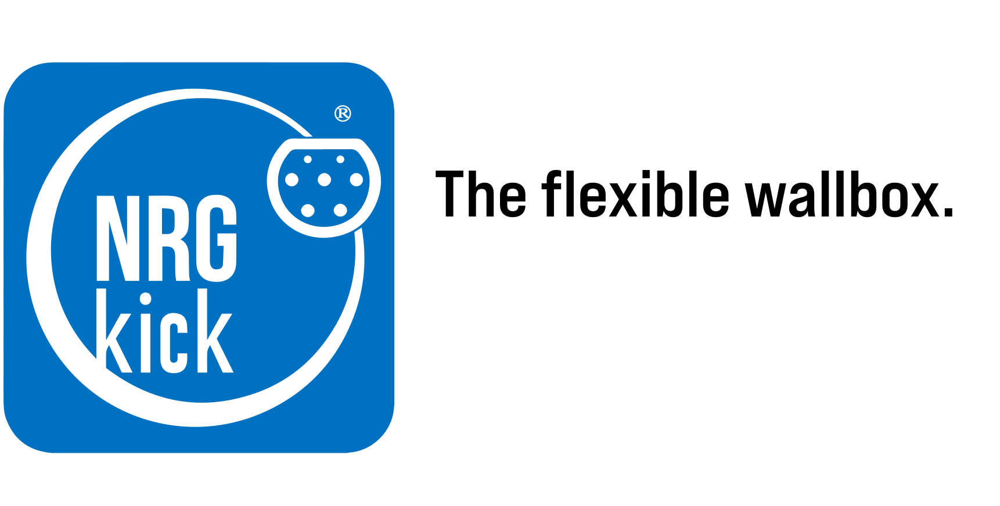
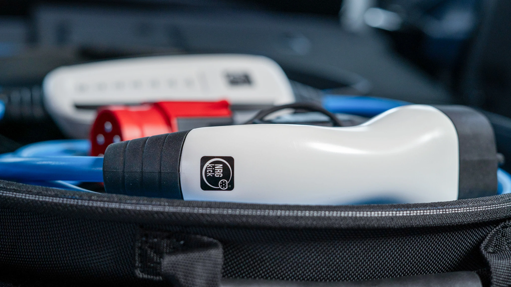
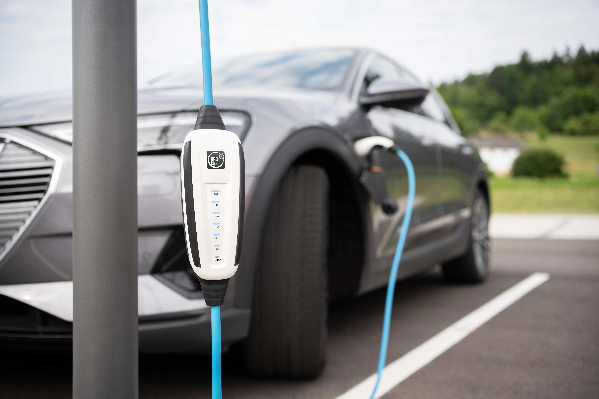
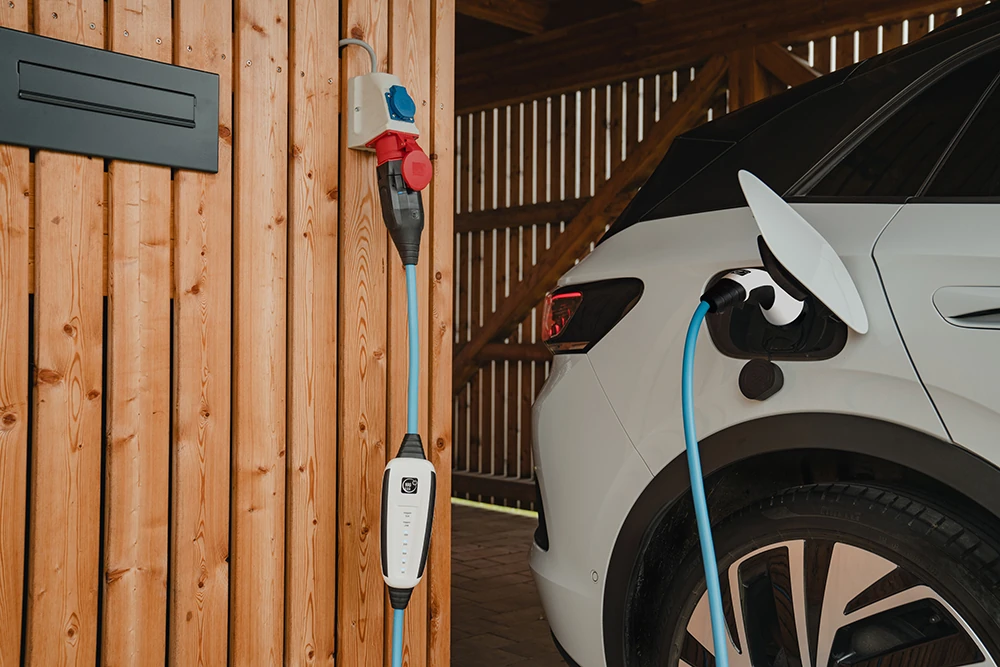

Mobiili latausasema jokaiseen tilanteeseen
Enemmän kuin pelkkä latauskaapeli
NRGkick on paljon enemmän kuin pelkkä sähköauton latauskaapeli – se on täysiverinen, mobiili latausasema lataamiseen niin kotona kuin tien päällä.
Kannettavana AC-latausasemana NRGkick mahdollistaa turvallisen ja joustavan latauksen melkein mistä tahansa pistorasiasta – täysin ilman kiinteää asennusta. Modulaarisen liitinjärjestelmän ansiosta NRGkick sopii täydellisesti käytettäväksi kotona, töissä tai matkoilla.
Kaikki tärkeimmät turvatoiminnot – kuten vikavirtasuojaus, lämpötilan valvonta ja vaihetestaus – on integroitu suoraan latauslaitteeseen. Latausprosessia voidaan ohjata älykkäästi, ajastaa ja seurata helposti NRGkick-sovelluksen kautta.
Erityisen käytännöllistä: NRGkickiä voidaan käyttää aurinkosähkölataukseen yhdessä aurinkopaneelijärjestelmän kanssa – kestävää ja tehokasta sähköauton latausta varten.


Mistä NRGkick-latausjärjestelmä koostuu?
NRGkick-latausjärjestelmä tarjoaa kaiken, mitä tarvitset sähköautojen joustavaan, turvalliseen ja älykkääseen lataamiseen – modulaarisesti ja juuri sinun tarpeisiisi räätälöitynä.
Järjestelmän sydän on tehokas latausyksikkö integroiduilla turvatoiminnoilla. Sitä täydentää yksilöllisesti valittava liitinjärjestelmä, joka mahdollistaa laitteen käytön mitä erilaisimmissa pistorasioissa – olitpa sitten kotona, töissä tai tien päällä.
NRGkick-sovellus tarjoaa täyden hallinnan latausprosessiin sellaisten ominaisuuksien avulla, kuten latauksen ajastus, seuranta ja etäohjaus. Tarvittaessa järjestelmää voidaan laajentaa älykkäillä palveluilla, kuten aurinkosähkölatauksella, tai ammattitason rajapinnoilla, kuten OCPP-tuella.
Mikä tekee NRGkick-liitinjärjestelmästä erityisen?
Kätevän liitinjärjestelmän ansiosta voit mukauttaa NRGkick-latauslaitteesi joustavasti mihin tahansa käytettävissä olevaan virtalähteeseen. Olipa kyseessä tavallinen kotitalouspistorasia, punainen tai sininen CEE-voimavirtapistoke tai kansainväliset pistorasiamallit – oikea NRGkick-adapteri vain kytketään paikalleen, ja laite tunnistaa sen automaattisesti.
Järjestelmä suojaa luotettavasti virheellisiltä kytkennöiltä ja tunnistaa automaattisesti sähkövirran voimakkuuden sekä kaapelin tyypin. Tämän ansiosta voit ladata sähköautosi turvallisesti missä tahansa mobiililla latausasemallasi – kotona, toimistolla, matkoilla tai vaikkapa leirintäalueella.
